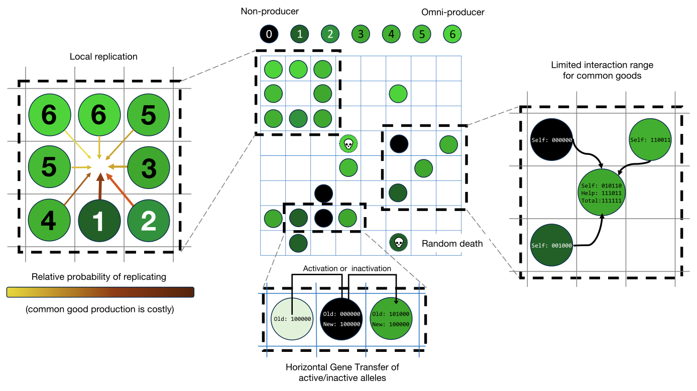

Click for the full model explanation
| All cells in a Moore neighbourhood of an empty space will have a chance to reproduce into that space. Cells that produce fewer goods have a greater chance of reproduction, provided they have access to all CGs. Cells within a certain interaction range can provide CGs to the focal (center) cell. HGT enables gaining new genes (activation), but also functional alleles being overwritten by non-functional alleles (inactivation). |
|  |